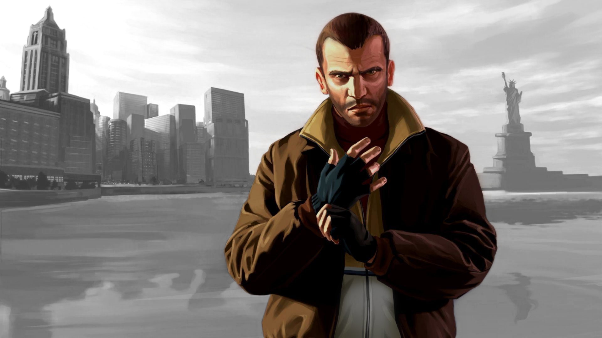

Onat Budak'tan özenerek yazmaya başladığım blogun ilk yazısı tabi ki GTA IV ve özel olarak Niko Bellic hakkında olacaktı. Bu yazıyı 3 parça halinde yazmak istiyorum: Karakterin altyapısı, İhanetler ve Kararlar.
Karakterin altyapısıyla başlayalım: Niko Bellic, Yugoslavya 1978 doğumlu. Ki bu da onu gençliğinin ortasında Yugoslav Savaşları'na katılmaya zorluyor. Genç yaşlarında bu denli büyük bir savaşa katılmak onu soğukkanlı bir katile dönüştürüyor. Kuzeni Roman ile onun dairesindeki ilk konuşmalarında Niko, Roman'a neden Amerika'ya geldiğini anlatıyor. Bu konuşmadan Niko'nun birliğinin savaş sırasında pusuya düştüğünü ve birliğin içinde bir hain olduğunu öğreniyoruz. O birlikten sağ çıkan 3 kişiden biri olan Niko, hayatını öncelikle o savaştan sağ çıkmaya ve sonrasında ise o hainden intikam almaya adıyor.

İhanetler Niko oyunun başı diyebileceğimiz bir noktada Vladimir "Vlad" Glebov'u, kuzeni Roman'ın sevgilisi Mallorie ile yattığını öğrendiği için öldürüyor. Bu ölüm sonucunda Roman ve Niko, Vlad'ın da üstü olan Mikhail Faustin ve yardımcısı Dimitri Rascalov tarafından kaçırılıyorlar. Mikhail Faustin, Vlad'ın ölmesinden o kadar da mutsuz olmamasından sebep ikiliyi serbest bırakıyor ve Niko'ya işler veriyor. İşlerin karmaşıklaştığı noktaya gelelim. Faustin'in Niko'ya verdiği görevler Kenny Petrovic'e yönelik saldırılar olduğundan Petrovic Niko'yu misillemeyle tehdit eder. Dimitri Rascalov ile birebir konuşan Niko, Petrovic'le arasını düzeltmek ve bu iş karşılığında alacağı ödeme için Faustin'e ihanet etmeye karar verir ve çok zorlanmadan Faustin'i öldürür. Faustin'i öldürdükten sonra ödemeyi almak için Dimitri ile bir depoda buluşan Niko burada pusuya düşer ve oyunun belki de en büyük ihanetine burada uğrar.
Little Jakob yardımıyla pusudan kurtulan Niko,